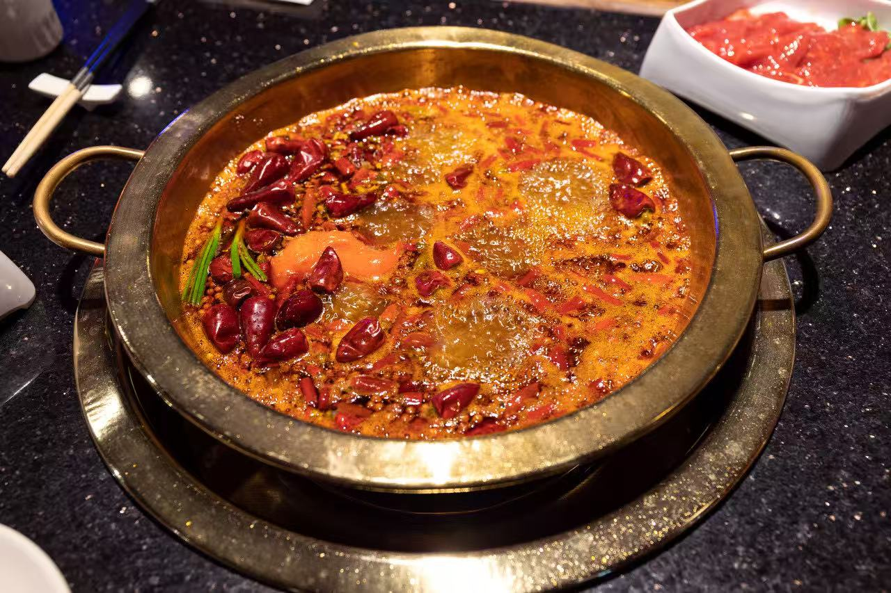
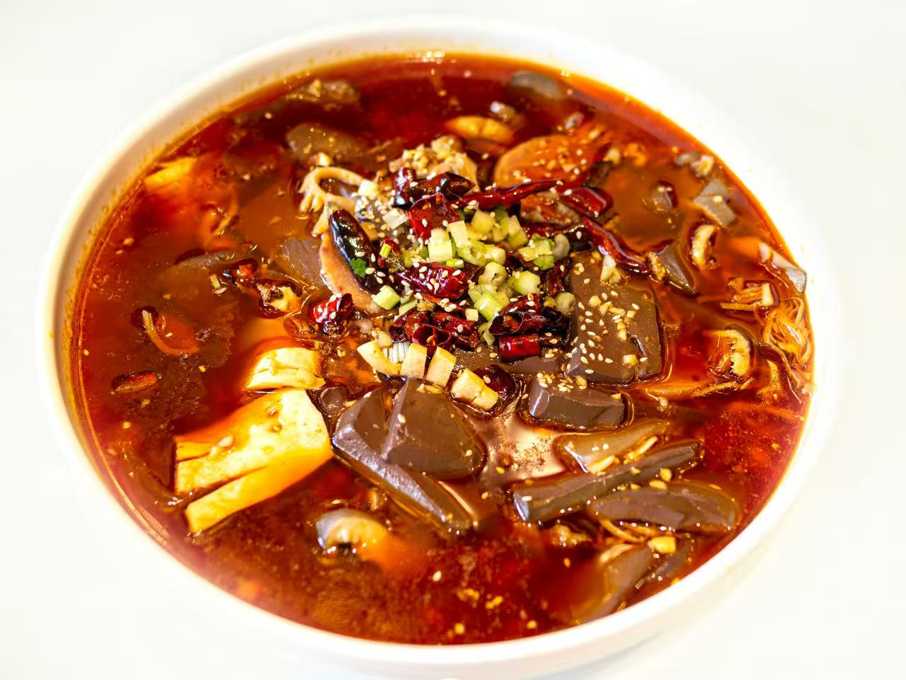
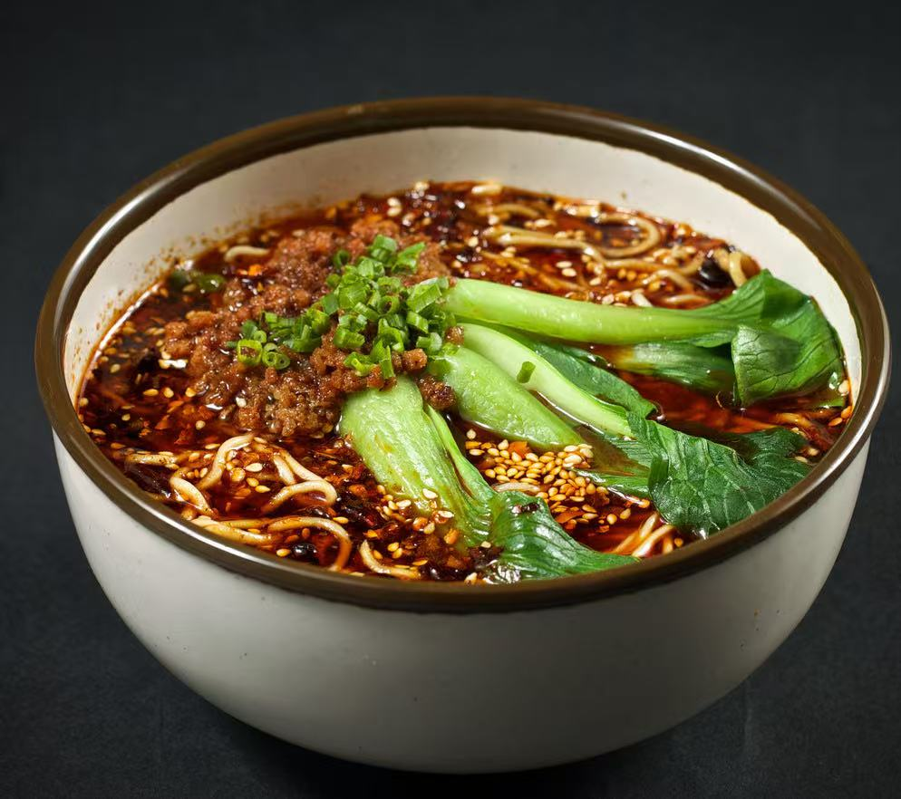
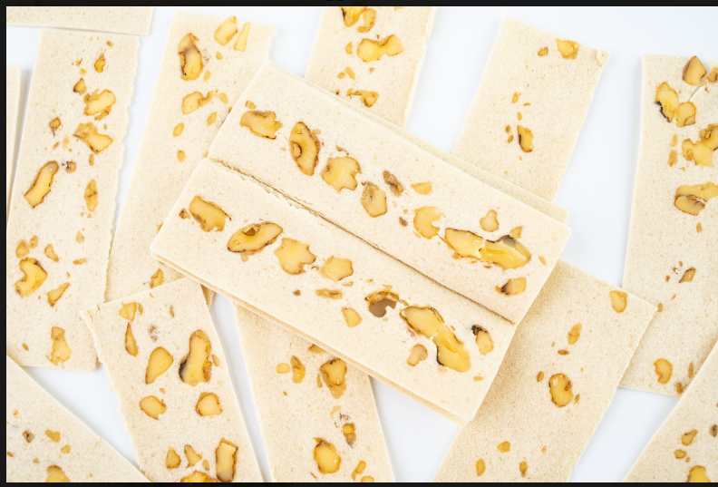

Chongqing Cuisine — Regional Food Guide
A comprehensive guide to the authentic flavors, signature dishes, and culinary traditions of Chongqing.
Signature Dishes of Chongqing

Chongqing Hotpot
The original Chinese hotpot — a blazing cauldron of beef tallow, dried chilies, and Sichuan peppercorns. Born from Chongqing's dockworker culture, thi

Mao Xue Wang
A fiery Chongqing classic — duck blood curd, tripe, and offal simmered in a crimson chili broth. Born from dock culture, it's the boldest expression o

Chongqing Xiao Mian (Small Noodles)
Chongqing's soul breakfast — alkaline wheat noodles tossed in a fiery blend of chili oil, Sichuan pepper, soy sauce, and sesame paste. Simple ingredie

Hechuan Peach Slice (Taopian)
Paper-thin, snow-white confection made from glutinous rice, walnut kernels, and honey — a Qing Dynasty delicacy from Hechuan District that folds witho
Food Culture of Chongqing
The cuisine of Chongqing reflects its geography, climate, and rich cultural heritage. Local ingredients, traditional cooking methods, and centuries of culinary evolution have created a distinctive food culture that is recognized throughout China and the world.